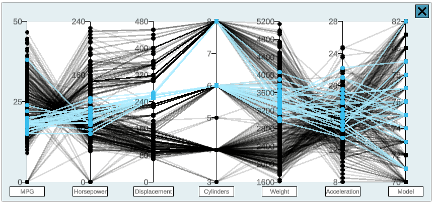

Class ParallelCoordsPlot
Parallel coordinates plot DataPlot implementation that uses Unity particle systems along with line renderers to efficiently render many data points at once. 
Implements
Inherited Members
Namespace: IVLab.Plotting
Assembly: cs.temp.dll.dll
Syntax
public class ParallelCoordsPlot : DataPlot, ILinkedDataFields
defaultLineColor
The default color of lines in the plot.
Declaration
protected Color32 defaultLineColorField Value
| Type | Description |
|---|---|
| Color32 |
highlightedLineColor
The color of highlighted lines in the plot.
Declaration
protected Color32 highlightedLineColorField Value
| Type | Description |
|---|---|
| Color32 |
maskedLineColor
The color of masked lines in the plot.
Declaration
protected Color32 maskedLineColorField Value
| Type | Description |
|---|---|
| Color32 |
Methods
BrushSelection(Vector2, Vector2, SelectionMode.State)
Selects all the data points that the brush has passed over.
Declaration
public override void BrushSelection(Vector2 prevBrushPosition, Vector2 brushDelta, SelectionMode.State selectionState)Parameters
| Type | Name | Description |
|---|---|---|
| Vector2 | prevBrushPosition | Previous position of the brush. |
| Vector2 | brushDelta | Change in position from previous to current. |
| SelectionMode.State | selectionState | State of the selection, e.g. Start/Update/End. |
Overrides
Remarks
For a parallel coords plot, a "data point" consists of multiple point particles, any of which could be selected.
ClickSelection(Vector2, SelectionMode.State)
Selects the point within the point selection radius that is closest to the mouse selection position if the selection state is "Start", and otherwise simply checks to see if the initially selected point is still within the point selection radius, highlighting it if it is, unhighlighting it if it is not.
Declaration
public override void ClickSelection(Vector2 selectionPosition, SelectionMode.State selectionState)Parameters
| Type | Name | Description |
|---|---|---|
| Vector2 | selectionPosition | Current selection position. |
| SelectionMode.State | selectionState | State of the selection, e.g. Start/Update/End. |
Overrides
Remarks
For a parallel coords plot, a "data point" consists of multiple point particles, any of which could be selected.
FlipAxis(Int32)
Flips the j'th axis of the plot.
Declaration
public void FlipAxis(int j)Parameters
| Type | Name | Description |
|---|---|---|
| Int32 | j | Index into the data table for the column that should be flipped. |
Init(DataPlotManager, Vector2, Int32[])
Initializes the parallel coords plot by initializing its particle systems, line renderers, axis labeling scripts, and axis-flipping buttons.
Declaration
public override void Init(DataPlotManager dataPlotManager, Vector2 outerBounds, int[] selectedDataPointIndices = null)Parameters
| Type | Name | Description |
|---|---|---|
| DataPlotManager | dataPlotManager | Manager of the plot: contains references to the DataTable and LinkedIndices that the plot works from. |
| Vector2 | outerBounds | Size to set the outer bounds of the plot. |
| Int32[] | selectedDataPointIndices | Array of data point indices the plot should display.
If |
Overrides
Plot()
Plots only the selected data in the data table, updating all particle systems and line renderers.
Declaration
public override void Plot()Overrides
RectSelection(RectTransform)
Selects all of the data points inside the given selection rectangle.
Declaration
public override void RectSelection(RectTransform selectionRect)Parameters
| Type | Name | Description |
|---|---|---|
| RectTransform | selectionRect | Transform of the selection rectangle. |
Overrides
Remarks
For a parallel coords plot, a "data point" consists of multiple point particles, any of which could be selected.
RefreshPlotGraphics()
Updates the point particle systems to reflect the current state of the data point particles.
Declaration
public override void RefreshPlotGraphics()Overrides
Remarks
Usually called after a series of UpdateDataPoint() calls to ensure that those updates are visually reflected.
UpdateDataPoint(Int32, LinkedIndices.LinkedAttributes)
Updates a specified data point (which for a parallel coords plot includes multiple point particles and their line renderer) based on its linked index attributes, only if it is already within the selected subset of points that this graph plots.
Declaration
public override void UpdateDataPoint(int index, LinkedIndices.LinkedAttributes indexAttributes)Parameters
| Type | Name | Description |
|---|---|---|
| Int32 | index | Index of data point that needs to be updated. |
| LinkedIndices.LinkedAttributes | indexAttributes | Current attributes of the data point. |